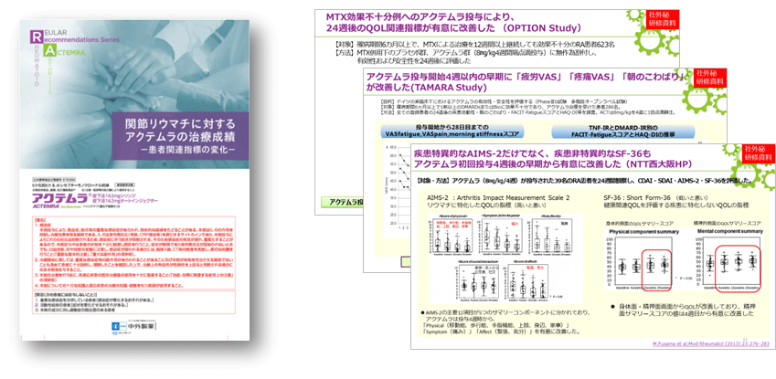
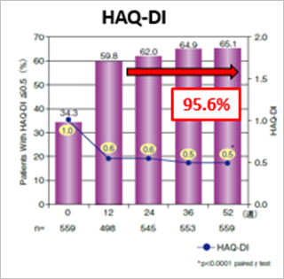

6. KEVはPROを改善する？

既にACTにおいてもHAQ-DIやSF-36、Facit FatigueなどPRO改善のデータが国内外から複数報告されています。FIRST-BIO studyではACTの高いHAQ寛解とその維持効果も報告されています。


Ishiguro N,et al;Mod Rheumatol, 2016; Early Online: 1–10
ACTは関節症状のみならず、RAの全身症状の改善効果を既に豊富に有している
既にACTにおいてもHAQ-DIやSF-36、Facit FatigueなどPRO改善のデータが国内外から複数報告されています。FIRST-BIO studyではACTの高いHAQ寛解とその維持効果も報告されています。
Ishiguro N,et al;Mod Rheumatol, 2016; Early Online: 1–10
ACTは関節症状のみならず、RAの全身症状の改善効果を既に豊富に有している